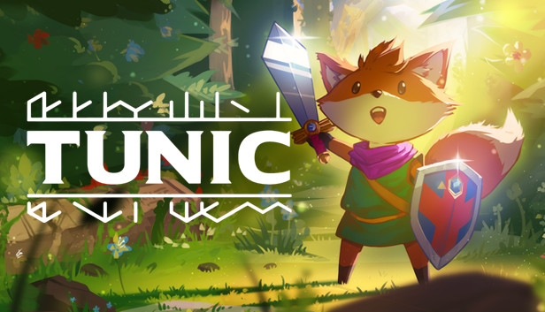

TOP 5
1.- Hollow Knight
Hollow Knight es un videojuego de acción y aventura desarrollado por Team Cherry, lanzado en febrero de 2017. Ambientado en un mundo subterráneo llamado Hallownest, el juego combina elementos de plataformas y metroidvania, ofreciendo una experiencia inmersiva y desafiante.

2.- Celeste
Celeste es un videojuego de plataformas desarrollado por Maddy Makes Games, lanzado en enero de 2018. El juego sigue la historia de Madeline, una joven que intenta escalar la montaña Celeste, enfrentándose tanto a desafíos físicos como a sus propias luchas internas.
3.- Tunic
Tunic es un videojuego de acción y aventura desarrollado por Andrew Shouldice, lanzado en marzo de 2022. El juego presenta a un pequeño zorro que explora un mundo vibrante y misterioso, con mecánicas inspiradas en títulos clásicos de aventuras.
4.- Ori
Ori es una serie de videojuegos de plataformas y aventura desarrollada por Moon Studios. Comenzó con Ori and the Blind Forest, lanzado en 2015, y continuó con Ori and the Will of the Wisps en 2020. Ambos juegos son conocidos por su emotiva narrativa, hermoso arte visual y jugabilidad desafiante.

5.- Terraria
Terraria es un videojuego de acción y aventura de construcción y exploración, desarrollado por Re-Logic y lanzado en mayo de 2011. Con un estilo visual en 2D y una jugabilidad sandbox, permite a los jugadores crear y explorar mundos generados procedimentalmente.